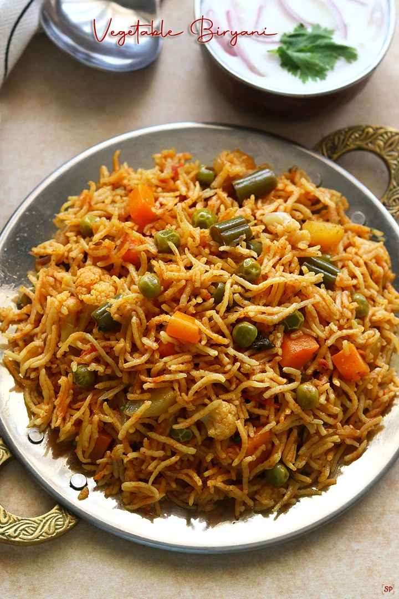

Famous Indian Foods
India is famous for its delicious food.
Indian food includes different spices,
vegetables and traditional dishes.
Five Famous Indian Dishes
- Butter Chicken
- Paneer Tikka
- Masala Dosa
- Biryani
- Chole Bhature
Food Categories
- North Indian
- South Indian
- Street Food
- Desserts
Food Description
- Biryani
- A tasty rice dish made with spices.
- Paneer Tikka
- A popular dish made with paneer.
- Masala Dosa
- A South Indian dish made with rice batter.
Food Images



Other Pages
Home |
Destinations |
Places |
Gallery |
Contact